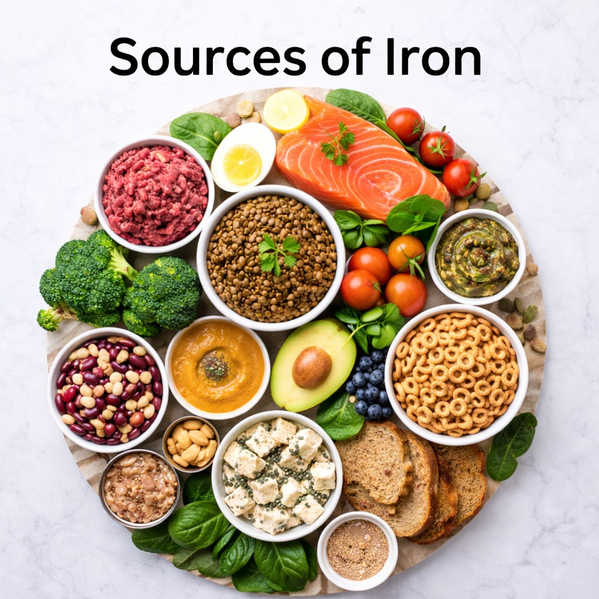

Fiber for Babies: Why It Matters, How Much They Need, and the Best Fiber-Rich Foods
A guide to fiber for babies — what it is, why it matters for digestion and gut health, how much they need, and the best fiber-rich foods for healthy eating habits.
2026-03-13
How Baby Sleep Cycles Actually Work (0–12 Months)
Understanding the biology behind night wakings, short naps, and sleep transitions. Why babies wake between cycles — and why that's normal.
2026-02-23
Bottle Feeding Your Baby: A Gentle Guide for Parents
Whether you're formula feeding, supplementing, or offering expressed breast milk — practical tips for paced feeding, bottle choice, and safety.
2026-02-22
When to Start Sleep Training
Sleep training is one of the biggest questions parents face — especially after the newborn phase. A practical guide on timing, readiness signs, and what experts recommend.
2026-02-21

Creating a Baby Sleep Space That Feels Safe, Calm, and Loving
A sleep space isn't just a room. It's a message you're sending your baby's nervous system: "You're safe. You can let go. I'm here." Practical tips on safety, light, sound, temperature, and routines.
2026-02-19
25 Best First Foods for Baby: A Parent's Guide to Starting Solids
A practical guide covering readiness signs, nutrient-dense first foods, feeding tips, and safety reminders to help parents start solids confidently.
2026-02-19
Understanding Sleep Cues in Older Babies: A Parent’s Guide to Better Naps & Bedtimes
As babies grow out of the newborn phase, their sleep changes in ways that many parents don’t expect. That tiny, predictable baby who once drifted off after a few obvious sleepy signs now interacts more with the world — and sleep cues can become subtle or even surprising.
2026-02-18
Vitamin D for Kids: Why It Matters More Than Most Parents Realize
Vitamin D — the sunshine vitamin — supports bone growth, immune health, and muscle development. Practical tips for parents.
2026-02-17

Iron-Rich Foods for Babies, Toddlers & Kids
A practical, parent-friendly guide with 50+ meal and snack ideas to meet iron needs.
2026-02-16
Baby Sleep Regression — The Complete Gentle Survival Guide for Exhausted Parents
A deeply detailed, practical, and emotionally supportive guide to help parents understand sleep regressions and confidently respond with gentle structure and reassurance.
2026-02-15